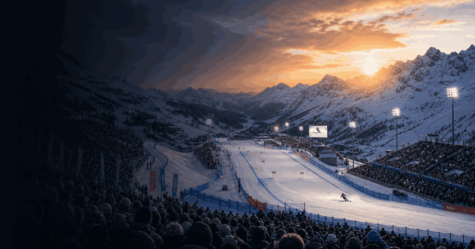
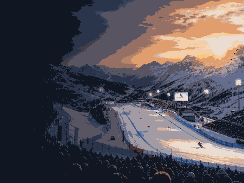

Multi Sport event view
Winter Olympics
A compact visual event view of the Winter Olympics: the four-year cycle, actual host editions and the next Games.
First held1924
FrequencyEvery 4 years
Next edition2030
FormatWinter Olympic Games
History viewEdition results and parts
Use the year switcher for recent editions. The selected edition stays inside this framed sport view.

More Multi SportInterested in more Multi Sport?Explore related events, places and calendar moments.